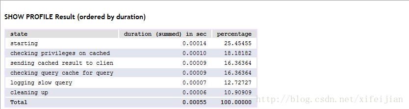
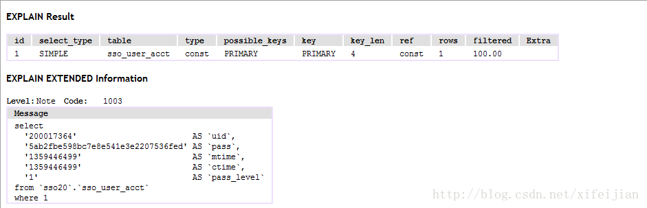
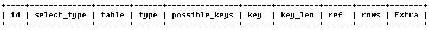
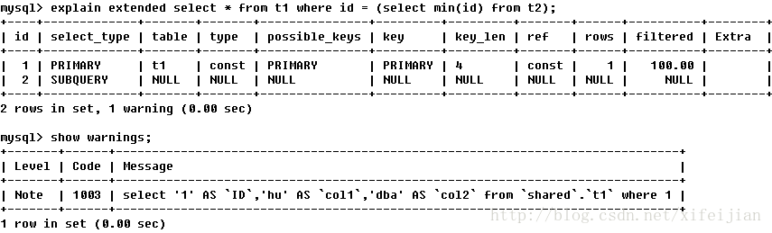
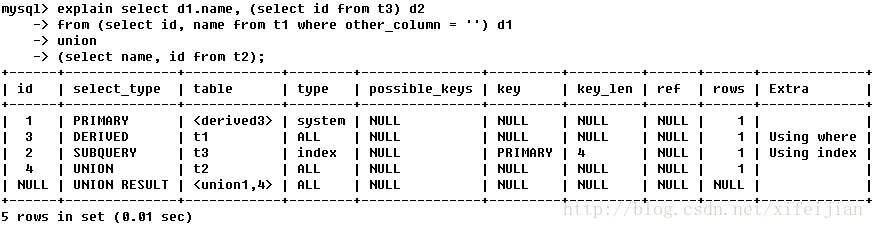

<!doctype html>
<html>
<head>
<meta charset='UTF-8'><meta name='viewport' content='width=device-width initial-scale=1'>
<title>MySQL explain执行.md</title><link href='http://fonts.googleapis.com/css?family=Open+Sans:400italic,700italic,700,400&subset=latin,latin-ext' rel='stylesheet' type='text/css' /><style type='text/css'>html {overflow-x: initial !important;}.CodeMirror { height: auto; }
.CodeMirror-scroll { overflow-y: hidden; overflow-x: auto; }
.CodeMirror-lines { padding: 4px 0px; }
.CodeMirror pre { }
.CodeMirror-scrollbar-filler, .CodeMirror-gutter-filler { background-color: white; }
.CodeMirror-gutters { border-right: 1px solid rgb(221, 221, 221); background-color: rgb(247, 247, 247); white-space: nowrap; }
.CodeMirror-linenumbers { }
.CodeMirror-linenumber { padding: 0px 3px 0px 5px; text-align: right; color: rgb(153, 153, 153); }
.CodeMirror div.CodeMirror-cursor { border-left: 1px solid black; z-index: 3; }
.CodeMirror div.CodeMirror-secondarycursor { border-left: 1px solid silver; }
.CodeMirror.cm-keymap-fat-cursor div.CodeMirror-cursor { width: auto; border: 0px; background: rgb(119, 238, 119); z-index: 1; }
.CodeMirror div.CodeMirror-cursor.CodeMirror-overwrite { }
.cm-tab { display: inline-block; }
.cm-s-typora-default .cm-header, .cm-s-typora-default .cm-property { color: rgb(217, 79, 138); }
.cm-s-typora-default pre.cm-header1:not(.cm-atom) :not(.cm-overlay) { font-size: 2rem; line-height: 2rem; }
.cm-s-typora-default pre.cm-header2:not(.cm-atom) :not(.cm-overlay) { font-size: 1.4rem; line-height: 1.4rem; }
.cm-s-typora-default .cm-atom, .cm-s-typora-default .cm-number { color: rgb(149, 132, 134); }
.cm-s-typora-default .cm-table-row, .cm-s-typora-default .cm-block-start { font-family: monospace; }
.cm-s-typora-default .cm-comment, .cm-s-typora-default .cm-code { color: rgb(74, 90, 159); font-family: monospace; }
.cm-s-typora-default .cm-tag { color: rgb(169, 68, 66); }
.cm-s-typora-default .cm-string { color: rgb(126, 134, 169); }
.cm-s-typora-default .cm-link { color: rgb(196, 122, 15); text-decoration: underline; }
.cm-s-typora-default .cm-variable-2, .cm-s-typora-default .cm-variable-1 { color: inherit; }
.cm-s-typora-default .cm-overlay { font-family: monospace; }
.CodeMirror.cm-s-typora-default div.CodeMirror-cursor { border-left: 3px solid rgb(228, 98, 154); }
.cm-s-typora-default .CodeMirror-activeline-background { left: -60px; right: -30px; background: rgba(204, 204, 204, 0.2); }
.cm-s-typora-default .CodeMirror-gutters { border-right: none; background-color: inherit; }
.cm-s-typora-default .cm-trailing-space-new-line::after, .cm-startspace::after, .cm-starttab .cm-tab::after { content: "•"; position: absolute; left: 0px; opacity: 0; font-family: LetterGothicStd, monospace; }
.os-windows .cm-startspace::after, .os-windows .cm-starttab .cm-tab::after { left: -0.1em; }
.cm-starttab .cm-tab::after { content: " "; }
.cm-startspace, .cm-tab, .cm-starttab, .cm-trailing-space-a, .cm-trailing-space-b, .cm-trailing-space-new-line { font-family: monospace; position: relative; }
.cm-s-typora-default .cm-trailing-space-new-line::after { content: "↓"; opacity: 0.3; }
.cm-s-inner .cm-keyword { color: rgb(119, 0, 136); }
.cm-s-inner .cm-atom, .cm-s-inner.cm-atom { color: rgb(34, 17, 153); }
.cm-s-inner .cm-number { color: rgb(17, 102, 68); }
.cm-s-inner .cm-def { color: rgb(0, 0, 255); }
.cm-s-inner .cm-variable { color: black; }
.cm-s-inner .cm-variable-2 { color: rgb(0, 85, 170); }
.cm-s-inner .cm-variable-3 { color: rgb(0, 136, 85); }
.cm-s-inner .cm-property { color: black; }
.cm-s-inner .cm-operator { color: rgb(152, 26, 26); }
.cm-s-inner .cm-comment, .cm-s-inner.cm-comment { color: rgb(170, 85, 0); }
.cm-s-inner .cm-string { color: rgb(170, 17, 17); }
.cm-s-inner .cm-string-2 { color: rgb(255, 85, 0); }
.cm-s-inner .cm-meta { color: rgb(85, 85, 85); }
.cm-s-inner .cm-qualifier { color: rgb(85, 85, 85); }
.cm-s-inner .cm-builtin { color: rgb(51, 0, 170); }
.cm-s-inner .cm-bracket { color: rgb(153, 153, 119); }
.cm-s-inner .cm-tag { color: rgb(17, 119, 0); }
.cm-s-inner .cm-attribute { color: rgb(0, 0, 204); }
.cm-s-inner .cm-header, .cm-s-inner.cm-header { color: blue; }
.cm-s-inner .cm-quote, .cm-s-inner.cm-quote { color: rgb(0, 153, 0); }
.cm-s-inner .cm-hr, .cm-s-inner.cm-hr { color: rgb(153, 153, 153); }
.cm-s-inner .cm-link, .cm-s-inner.cm-link { color: rgb(0, 0, 204); }
.cm-negative { color: rgb(221, 68, 68); }
.cm-positive { color: rgb(34, 153, 34); }
.cm-header, .cm-strong { font-weight: bold; }
.cm-del { text-decoration: line-through; }
.cm-em { font-style: italic; }
.cm-link { text-decoration: underline; }
.cm-error { color: rgb(255, 0, 0); }
.cm-invalidchar { color: rgb(255, 0, 0); }
.cm-constant { color: rgb(38, 139, 210); }
.cm-defined { color: rgb(181, 137, 0); }
div.CodeMirror span.CodeMirror-matchingbracket { color: rgb(0, 255, 0); }
div.CodeMirror span.CodeMirror-nonmatchingbracket { color: rgb(255, 34, 34); }
.cm-s-inner .CodeMirror-activeline-background { background: inherit; }
.CodeMirror { position: relative; overflow: hidden; }
.CodeMirror-scroll { margin-bottom: -30px; margin-right: -30px; padding-bottom: 30px; padding-right: 30px; height: 100%; outline: none; position: relative; box-sizing: content-box; }
.CodeMirror-sizer { position: relative; }
.CodeMirror-vscrollbar, .CodeMirror-hscrollbar, .CodeMirror-scrollbar-filler, .CodeMirror-gutter-filler { position: absolute; z-index: 6; display: none; }
.CodeMirror-vscrollbar { right: 0px; top: 0px; overflow-x: hidden; overflow-y: scroll; }
.CodeMirror-hscrollbar { bottom: 0px; left: 0px; overflow-y: hidden; overflow-x: scroll; }
.CodeMirror-scrollbar-filler { right: 0px; bottom: 0px; }
.CodeMirror-gutter-filler { left: 0px; bottom: 0px; }
.CodeMirror-gutters { position: absolute; left: 0px; top: 0px; padding-bottom: 30px; z-index: 3; }
.CodeMirror-gutter { white-space: normal; height: 100%; box-sizing: content-box; padding-bottom: 30px; margin-bottom: -32px; display: inline-block; }
.CodeMirror-gutter-wrapper { position: absolute; z-index: 4; background: none !important; border: none !important; }
.CodeMirror-gutter-background { position: absolute; top: 0px; bottom: 0px; z-index: 4; }
.CodeMirror-gutter-elt { position: absolute; cursor: default; z-index: 4; }
.CodeMirror-lines { cursor: text; }
.CodeMirror pre { border-radius: 0px; border-width: 0px; background: transparent; font-family: inherit; font-size: inherit; margin: 0px; white-space: pre; word-wrap: normal; color: inherit; z-index: 2; position: relative; overflow: visible; }
.CodeMirror-wrap pre { word-wrap: break-word; white-space: pre-wrap; word-break: normal; }
.CodeMirror-code pre { border-right: 30px solid transparent; width: fit-content; }
.CodeMirror-wrap .CodeMirror-code pre { border-right: none; width: auto; }
.CodeMirror-linebackground { position: absolute; left: 0px; right: 0px; top: 0px; bottom: 0px; z-index: 0; }
.CodeMirror-linewidget { position: relative; z-index: 2; overflow: auto; }
.CodeMirror-widget { }
.CodeMirror-wrap .CodeMirror-scroll { overflow-x: hidden; }
.CodeMirror-measure { position: absolute; width: 100%; height: 0px; overflow: hidden; visibility: hidden; }
.CodeMirror-measure pre { position: static; }
.CodeMirror div.CodeMirror-cursor { position: absolute; visibility: hidden; border-right: none; width: 0px; }
.CodeMirror div.CodeMirror-cursor { visibility: hidden; }
.CodeMirror-focused div.CodeMirror-cursor { visibility: inherit; }
.CodeMirror-selected { background: rgb(217, 217, 217); }
.CodeMirror-focused .CodeMirror-selected { background: rgb(215, 212, 240); }
.cm-searching { background: rgba(255, 255, 0, 0.4); }
.CodeMirror span { }
@media print {
  .CodeMirror div.CodeMirror-cursor { visibility: hidden; }
}
.CodeMirror-lint-markers { width: 16px; }
.CodeMirror-lint-tooltip { background-color: infobackground; border: 1px solid black; border-radius: 4px; color: infotext; font-family: monospace; overflow: hidden; padding: 2px 5px; position: fixed; white-space: pre-wrap; z-index: 10000; max-width: 600px; opacity: 0; transition: opacity 0.4s; font-size: 0.8em; }
.CodeMirror-lint-mark-error, .CodeMirror-lint-mark-warning { background-position: left bottom; background-repeat: repeat-x; }
.CodeMirror-lint-mark-error { background-image: url(""); }
.CodeMirror-lint-marker-error, .CodeMirror-lint-marker-warning { background-position: center center; background-repeat: no-repeat; cursor: pointer; display: inline-block; height: 16px; width: 16px; vertical-align: middle; position: relative; }
.CodeMirror-lint-message-error, .CodeMirror-lint-message-warning { padding-left: 18px; background-position: left top; background-repeat: no-repeat; }
.CodeMirror-lint-marker-error, .CodeMirror-lint-message-error { background-image: url(""); }
.CodeMirror-lint-marker-warning, .CodeMirror-lint-message-warning { background-image: url(""); }
.CodeMirror-lint-marker-multiple { background-image: url("data:image/png;base64,iVBORw0KGgoAAAANSUhEUgAAAAcAAAAHCAMAAADzjKfhAAAACVBMVEUAAAAAAAC/v7914kyHAAAAAXRSTlMAQObYZgAAACNJREFUeNo1ioEJAAAIwmz/H90iFFSGJgFMe3gaLZ0od+9/AQZ0ADosbYraAAAAAElFTkSuQmCC"); background-repeat: no-repeat; background-position: right bottom; width: 100%; height: 100%; }


:root { --bg-color: #ffffff; --text-color: #333333; --code-block-bg-color: inherit; }
html { font-size: 14px; background-color: var(--bg-color); color: var(--text-color); font-family: "Helvetica Neue", Helvetica, Arial, sans-serif; -webkit-font-smoothing: antialiased; }
body { margin: 0px; padding: 0px; height: auto; bottom: 0px; top: 0px; left: 0px; right: 0px; font-size: 1rem; line-height: 1.42857; overflow-x: hidden; background: inherit; }
a:active, a:hover { outline: 0px; }
.in-text-selection, ::selection { background: rgb(181, 214, 252); text-shadow: none; }
#write { margin: 0px auto; height: auto; width: inherit; word-break: normal; word-wrap: break-word; position: relative; padding-bottom: 70px; white-space: pre-wrap; overflow-x: visible; }
.for-image #write { padding-left: 8px; padding-right: 8px; }
body.typora-export { padding-left: 30px; padding-right: 30px; }
@media screen and (max-width: 500px) {
  body.typora-export { padding-left: 0px; padding-right: 0px; }
  .CodeMirror-sizer { margin-left: 0px !important; }
  .CodeMirror-gutters { display: none !important; }
}
.typora-export #write { margin: 0px auto; }
#write > p:first-child, #write > ul:first-child, #write > ol:first-child, #write > pre:first-child, #write > blockquote:first-child, #write > div:first-child, #write > table:first-child { margin-top: 30px; }
#write li > table:first-child { margin-top: -20px; }
img { max-width: 100%; vertical-align: middle; }
input, button, select, textarea { color: inherit; font-style: inherit; font-variant: inherit; font-weight: inherit; font-stretch: inherit; font-size: inherit; line-height: inherit; font-family: inherit; }
input[type="checkbox"], input[type="radio"] { line-height: normal; padding: 0px; }
::before, ::after, * { box-sizing: border-box; }
#write p, #write h1, #write h2, #write h3, #write h4, #write h5, #write h6, #write div, #write pre { width: inherit; }
#write p, #write h1, #write h2, #write h3, #write h4, #write h5, #write h6 { position: relative; }
h1 { font-size: 2rem; }
h2 { font-size: 1.8rem; }
h3 { font-size: 1.6rem; }
h4 { font-size: 1.4rem; }
h5 { font-size: 1.2rem; }
h6 { font-size: 1rem; }
p { -webkit-margin-before: 1rem; -webkit-margin-after: 1rem; -webkit-margin-start: 0px; -webkit-margin-end: 0px; }
.typora-export p { white-space: normal; }
.mathjax-block { margin-top: 0px; margin-bottom: 0px; -webkit-margin-before: 0rem; -webkit-margin-after: 0rem; }
.hidden { display: none; }
.md-blockmeta { color: rgb(204, 204, 204); font-weight: bold; font-style: italic; }
a { cursor: pointer; }
sup.md-footnote { padding: 2px 4px; background-color: rgba(238, 238, 238, 0.7); color: rgb(85, 85, 85); border-radius: 4px; }
#write input[type="checkbox"] { cursor: pointer; width: inherit; height: inherit; margin: 4px 0px 0px; }
tr { break-inside: avoid; break-after: auto; }
thead { display: table-header-group; }
table { border-collapse: collapse; border-spacing: 0px; width: 100%; overflow: auto; break-inside: auto; text-align: left; }
table.md-table td { min-width: 80px; }
.CodeMirror-gutters { border-right: 0px; background-color: inherit; }
.CodeMirror { text-align: left; }
.CodeMirror-placeholder { opacity: 0.3; }
.CodeMirror pre { padding: 0px 4px; }
.CodeMirror-lines { padding: 0px; }
div.hr:focus { cursor: none; }
pre { white-space: pre-wrap; }
.CodeMirror-gutters { margin-right: 4px; }
.md-fences { font-size: 0.9rem; display: block; break-inside: avoid; text-align: left; overflow: visible; white-space: pre; background: var(--code-block-bg-color); position: relative !important; }
.md-diagram-panel { width: 100%; margin-top: 10px; text-align: center; padding-top: 0px; padding-bottom: 8px; overflow-x: auto; }
.md-fences .CodeMirror.CodeMirror-wrap { top: -1.6em; margin-bottom: -1.6em; }
.md-fences.mock-cm { white-space: pre-wrap; }
.show-fences-line-number .md-fences { padding-left: 0px; }
.show-fences-line-number .md-fences.mock-cm { padding-left: 40px; }
.footnotes { opacity: 0.8; font-size: 0.9rem; padding-top: 1em; padding-bottom: 1em; }
.footnotes + .footnotes { margin-top: -1em; }
.md-reset { margin: 0px; padding: 0px; border: 0px; outline: 0px; vertical-align: top; background: transparent; text-decoration: none; text-shadow: none; float: none; position: static; width: auto; height: auto; white-space: nowrap; cursor: inherit; -webkit-tap-highlight-color: transparent; line-height: normal; font-weight: normal; text-align: left; box-sizing: content-box; direction: ltr; }
li div { padding-top: 0px; }
blockquote { margin: 1rem 0px; }
li p, li .mathjax-block { margin: 0.5rem 0px; }
li { margin: 0px; position: relative; }
blockquote > :last-child { margin-bottom: 0px; }
blockquote > :first-child { margin-top: 0px; }
.footnotes-area { color: rgb(136, 136, 136); margin-top: 0.714rem; padding-bottom: 0.143rem; }
@media print {
  html, body { border: 1px solid transparent; height: 99%; break-after: avoid; break-before: avoid; }
  .typora-export * { -webkit-print-color-adjust: exact; }
  h1, h2, h3, h4, h5, h6 { break-after: avoid-page; orphans: 2; }
  p { orphans: 4; }
  html.blink-to-pdf { font-size: 13px; }
  .typora-export #write { padding-left: 1cm; padding-right: 1cm; padding-bottom: 0px; break-after: avoid; }
  .typora-export #write::after { height: 0px; }
  @page { margin: 20mm 0mm; }
}
.footnote-line { margin-top: 0.714em; font-size: 0.7em; }
a img, img a { cursor: pointer; }
pre.md-meta-block { font-size: 0.8rem; min-height: 2.86rem; white-space: pre-wrap; background: rgb(204, 204, 204); display: block; overflow-x: hidden; }
p .md-image:only-child { display: inline-block; width: 100%; text-align: center; }
#write .MathJax_Display { margin: 0.8em 0px 0px; }
.mathjax-block { white-space: pre; overflow: hidden; width: 100%; }
p + .mathjax-block { margin-top: -1.143rem; }
.mathjax-block:not(:empty)::after { display: none; }
[contenteditable="true"]:active, [contenteditable="true"]:focus { outline: none; box-shadow: none; }
.task-list { list-style-type: none; }
.task-list-item { position: relative; padding-left: 1em; }
.task-list-item input { position: absolute; top: 0px; left: 0px; }
.math { font-size: 1rem; }
.md-toc { min-height: 3.58rem; position: relative; font-size: 0.9rem; border-radius: 10px; }
.md-toc-content { position: relative; margin-left: 0px; }
.md-toc::after, .md-toc-content::after { display: none; }
.md-toc-item { display: block; color: rgb(65, 131, 196); text-decoration: none; }
.md-toc-inner:hover { }
.md-toc-inner { display: inline-block; cursor: pointer; }
.md-toc-h1 .md-toc-inner { margin-left: 0px; font-weight: bold; }
.md-toc-h2 .md-toc-inner { margin-left: 2em; }
.md-toc-h3 .md-toc-inner { margin-left: 4em; }
.md-toc-h4 .md-toc-inner { margin-left: 6em; }
.md-toc-h5 .md-toc-inner { margin-left: 8em; }
.md-toc-h6 .md-toc-inner { margin-left: 10em; }
@media screen and (max-width: 48em) {
  .md-toc-h3 .md-toc-inner { margin-left: 3.5em; }
  .md-toc-h4 .md-toc-inner { margin-left: 5em; }
  .md-toc-h5 .md-toc-inner { margin-left: 6.5em; }
  .md-toc-h6 .md-toc-inner { margin-left: 8em; }
}
a.md-toc-inner { font-size: inherit; font-style: inherit; font-weight: inherit; line-height: inherit; }
.footnote-line a:not(.reversefootnote) { color: inherit; }
.md-attr { display: none; }
.md-fn-count::after { content: "."; }
.md-tag { opacity: 0.5; }
.md-comment { color: rgb(162, 127, 3); opacity: 0.8; font-family: monospace; }
code { text-align: left; }
h1 .md-tag, h2 .md-tag, h3 .md-tag, h4 .md-tag, h5 .md-tag, h6 .md-tag { font-weight: initial; opacity: 0.35; }
a.md-print-anchor { border-width: initial !important; border-style: none !important; border-color: initial !important; display: inline-block !important; position: absolute !important; width: 1px !important; right: 0px !important; outline: none !important; background: transparent !important; text-decoration: initial !important; text-shadow: initial !important; }
.md-inline-math .MathJax_SVG .noError { display: none !important; }
.mathjax-block .MathJax_SVG_Display { text-align: center; margin: 1em 0em; position: relative; text-indent: 0px; max-width: none; max-height: none; min-height: 0px; min-width: 100%; width: auto; display: block !important; }
.MathJax_SVG_Display, .md-inline-math .MathJax_SVG_Display { width: auto; margin: inherit; display: inline-block !important; }
.MathJax_SVG .MJX-monospace { font-family: monospace; }
.MathJax_SVG .MJX-sans-serif { font-family: sans-serif; }
.MathJax_SVG { display: inline; font-style: normal; font-weight: normal; line-height: normal; zoom: 90%; text-indent: 0px; text-align: left; text-transform: none; letter-spacing: normal; word-spacing: normal; word-wrap: normal; white-space: nowrap; float: none; direction: ltr; max-width: none; max-height: none; min-width: 0px; min-height: 0px; border: 0px; padding: 0px; margin: 0px; }
.MathJax_SVG * { transition: none; }
.md-diagram-panel > svg { max-width: 100%; }
[lang="flow"] svg, [lang="mermaid"] svg { max-width: 100%; }


:root { --side-bar-bg-color: #fafafa; --control-text-color: #777; }
@font-face { font-family: "Open Sans"; font-style: normal; font-weight: normal; src: local("Open Sans Regular"), url("./github/400.woff") format("woff"); }
@font-face { font-family: "Open Sans"; font-style: italic; font-weight: normal; src: local("Open Sans Italic"), url("./github/400i.woff") format("woff"); }
@font-face { font-family: "Open Sans"; font-style: normal; font-weight: bold; src: local("Open Sans Bold"), url("./github/700.woff") format("woff"); }
@font-face { font-family: "Open Sans"; font-style: italic; font-weight: bold; src: local("Open Sans Bold Italic"), url("./github/700i.woff") format("woff"); }
html { font-size: 16px; }
body { font-family: "Open Sans", "Clear Sans", "Helvetica Neue", Helvetica, Arial, sans-serif; color: rgb(51, 51, 51); line-height: 1.6; }
#write { max-width: 860px; margin: 0px auto; padding: 20px 30px 100px; }
#write > ul:first-child, #write > ol:first-child { margin-top: 30px; }
body > :first-child { margin-top: 0px !important; }
body > :last-child { margin-bottom: 0px !important; }
a { color: rgb(65, 131, 196); }
h1, h2, h3, h4, h5, h6 { position: relative; margin-top: 1rem; margin-bottom: 1rem; font-weight: bold; line-height: 1.4; cursor: text; }
h1:hover a.anchor, h2:hover a.anchor, h3:hover a.anchor, h4:hover a.anchor, h5:hover a.anchor, h6:hover a.anchor { text-decoration: none; }
h1 tt, h1 code { font-size: inherit; }
h2 tt, h2 code { font-size: inherit; }
h3 tt, h3 code { font-size: inherit; }
h4 tt, h4 code { font-size: inherit; }
h5 tt, h5 code { font-size: inherit; }
h6 tt, h6 code { font-size: inherit; }
h1 { padding-bottom: 0.3em; font-size: 2.25em; line-height: 1.2; border-bottom: 1px solid rgb(238, 238, 238); }
h2 { padding-bottom: 0.3em; font-size: 1.75em; line-height: 1.225; border-bottom: 1px solid rgb(238, 238, 238); }
h3 { font-size: 1.5em; line-height: 1.43; }
h4 { font-size: 1.25em; }
h5 { font-size: 1em; }
h6 { font-size: 1em; color: rgb(119, 119, 119); }
p, blockquote, ul, ol, dl, table { margin: 0.8em 0px; }
li > ol, li > ul { margin: 0px; }
hr { height: 4px; padding: 0px; margin: 16px 0px; background-color: rgb(231, 231, 231); border-width: 0px 0px 1px; border-style: none none solid; border-top-color: initial; border-right-color: initial; border-left-color: initial; border-image: initial; overflow: hidden; box-sizing: content-box; border-bottom-color: rgb(221, 221, 221); }
body > h2:first-child { margin-top: 0px; padding-top: 0px; }
body > h1:first-child { margin-top: 0px; padding-top: 0px; }
body > h1:first-child + h2 { margin-top: 0px; padding-top: 0px; }
body > h3:first-child, body > h4:first-child, body > h5:first-child, body > h6:first-child { margin-top: 0px; padding-top: 0px; }
a:first-child h1, a:first-child h2, a:first-child h3, a:first-child h4, a:first-child h5, a:first-child h6 { margin-top: 0px; padding-top: 0px; }
h1 p, h2 p, h3 p, h4 p, h5 p, h6 p { margin-top: 0px; }
li p.first { display: inline-block; }
ul, ol { padding-left: 30px; }
ul:first-child, ol:first-child { margin-top: 0px; }
ul:last-child, ol:last-child { margin-bottom: 0px; }
blockquote { border-left: 4px solid rgb(221, 221, 221); padding: 0px 15px; color: rgb(119, 119, 119); }
blockquote blockquote { padding-right: 0px; }
table { padding: 0px; word-break: initial; }
table tr { border-top: 1px solid rgb(204, 204, 204); margin: 0px; padding: 0px; }
table tr:nth-child(2n) { background-color: rgb(248, 248, 248); }
table tr th { font-weight: bold; border: 1px solid rgb(204, 204, 204); text-align: left; margin: 0px; padding: 6px 13px; }
table tr td { border: 1px solid rgb(204, 204, 204); text-align: left; margin: 0px; padding: 6px 13px; }
table tr th:first-child, table tr td:first-child { margin-top: 0px; }
table tr th:last-child, table tr td:last-child { margin-bottom: 0px; }
.CodeMirror-gutters { border-right: 1px solid rgb(221, 221, 221); }
.md-fences, code, tt { border: 1px solid rgb(221, 221, 221); background-color: rgb(248, 248, 248); border-radius: 3px; font-family: Consolas, "Liberation Mono", Courier, monospace; padding: 2px 4px 0px; font-size: 0.9em; }
.md-fences { margin-bottom: 15px; margin-top: 15px; padding: 8px 1em 6px; }
.task-list { padding-left: 0px; }
.task-list-item { padding-left: 32px; }
.task-list-item input { top: 3px; left: 8px; }
@media screen and (min-width: 914px) {
}
@media print {
  html { font-size: 13px; }
  table, pre { break-inside: avoid; }
  pre { word-wrap: break-word; }
}
.md-fences { background-color: rgb(248, 248, 248); }
#write pre.md-meta-block { padding: 1rem; font-size: 85%; line-height: 1.45; background-color: rgb(247, 247, 247); border: 0px; border-radius: 3px; color: rgb(119, 119, 119); margin-top: 0px !important; }
.mathjax-block > .code-tooltip { bottom: 0.375rem; }
#write > h3.md-focus::before { left: -1.5625rem; top: 0.375rem; }
#write > h4.md-focus::before { left: -1.5625rem; top: 0.285714rem; }
#write > h5.md-focus::before { left: -1.5625rem; top: 0.285714rem; }
#write > h6.md-focus::before { left: -1.5625rem; top: 0.285714rem; }
.md-image > .md-meta { border: 1px solid rgb(221, 221, 221); border-radius: 3px; font-family: Consolas, "Liberation Mono", Courier, monospace; padding: 2px 4px 0px; font-size: 0.9em; color: inherit; }
.md-tag { color: inherit; }
.md-toc { margin-top: 20px; padding-bottom: 20px; }
.sidebar-tabs { border-bottom: none; }
#typora-quick-open { border: 1px solid rgb(221, 221, 221); background-color: rgb(248, 248, 248); }
#typora-quick-open-item { background-color: rgb(250, 250, 250); border-color: rgb(254, 254, 254) rgb(229, 229, 229) rgb(229, 229, 229) rgb(238, 238, 238); border-style: solid; border-width: 1px; }
#md-notification::before { top: 10px; }
.on-focus-mode blockquote { border-left-color: rgba(85, 85, 85, 0.12); }
header, .context-menu, .megamenu-content, footer { font-family: "Segoe UI", Arial, sans-serif; }
.file-node-content:hover .file-node-icon, .file-node-content:hover .file-node-open-state { visibility: visible; }
.mac-seamless-mode #typora-sidebar { background-color: var(--side-bar-bg-color); }
.md-lang { color: rgb(180, 101, 77); }


</style>
</head>
<body class='typora-export' >
<div  id='write'  class = 'is-node'><h3><a name='header-n0' class='md-header-anchor '></a>1.使用explain语句去查看分析结果</h3><pre class="md-fences md-end-block" lang="sql"> <div class="CodeMirror cm-s-inner CodeMirror-wrap"><div style="overflow: hidden; position: relative; width: 3px; height: 0px; top: 0px; left: 4px;"></div><div class="CodeMirror-scrollbar-filler" cm-not-content="true"></div><div class="CodeMirror-gutter-filler" cm-not-content="true"></div><div class="CodeMirror-scroll" tabindex="-1"><div class="CodeMirror-sizer" style="margin-left: 0px; margin-bottom: 0px; border-right-width: 30px; min-height: 45px; padding-right: 0px; padding-bottom: 0px;"><div style="position: relative; top: 0px;"><div class="CodeMirror-lines" role="presentation"><div role="presentation" style="position: relative; outline: none;"><div class="CodeMirror-measure"></div><div class="CodeMirror-measure"></div><div style="position: relative; z-index: 1;"></div><div class="CodeMirror-code" role="presentation"><div class="CodeMirror-activeline" style="position: relative;"><div class="CodeMirror-activeline-background CodeMirror-linebackground"></div><div class="CodeMirror-gutter-background CodeMirror-activeline-gutter" style="left: 0px; width: 0px;"></div><pre class=" CodeMirror-line " role="presentation"><span role="presentation" style="padding-right: 0.1px;">如explain <span class="cm-keyword">select</span> * <span class="cm-keyword">from</span> test1 <span class="cm-keyword">where</span> id=<span class="cm-number">1</span>;</span></pre></div><pre class=" CodeMirror-line " role="presentation"><span role="presentation" style="padding-right: 0.1px;">会出现：id selecttype <span class="cm-keyword">table</span> type possible_keys key key_len ref rows extra各列。</span></pre></div></div></div></div></div><div style="position: absolute; height: 30px; width: 1px; border-bottom: 0px solid transparent; top: 45px;"></div><div class="CodeMirror-gutters" style="display: none; height: 75px;"></div></div></div></pre><p>
</p><pre class='md-fences mock-cm' style='display:block;position:relative'>其中， 
type=const表示通过索引一次就找到了； 
key=primary的话，表示使用了主键； 
type=all,表示为全表扫描； 
key=null表示没用到索引。
type=ref，因为这时认为是多个匹配行，在联合查询中，一般为REF。</pre><h1><a name='header-n7' class='md-header-anchor '></a>2.MYSQL中的组合索引</h1><p>假设表有id,key1,key2,key3,把三者形成一个组合索引，则如： 
	</p><pre class='md-fences mock-cm' style='display:block;position:relative'>[sql] view plain copy
where key1=....   
where key1=1 and key2=2   
where key1=3 and key2=3 and key3=2   
根据最左前缀原则，这些都是可以使用索引的，如from test where key1=1 order by key3，用explain分析的话，只用到了normal_key索引，但只对where子句起作用，而后面的order by需要排序。</pre><h1><a name='header-n12' class='md-header-anchor '></a>3.使用慢查询分析（实用）</h1><pre class='md-fences mock-cm' style='display:block;position:relative'>在my.ini中： 
long_query_time=1 
log-slow-queries=d:\mysql5\logs\mysqlslow.log 
把超过1秒的记录在慢查询日志中 
可以用mysqlsla来分析之。也可以在mysqlreport中，有如 
DMS分别分析了select ,update,insert,delete,replace等所占的百分比</pre><h1><a name='header-n14' class='md-header-anchor '></a>4.MYISAM和INNODB的锁定</h1><pre class='md-fences mock-cm' style='display:block;position:relative'>myisam中，注意是表锁来的，比如在多个UPDATE操作后，再SELECT时，会发现SELECT操作被锁定了，必须等所有UPDATE操作完毕后，再能SELECT
innodb的话则不同了，用的是行锁，不存在上面问题。 </pre><h1><a name='header-n16' class='md-header-anchor '></a>5.MYSQL的事务配置项</h1><pre class='md-fences mock-cm' style='display:block;position:relative'>innodb_flush_log_at_trx_commit=1 
表示事务提交时立即把事务日志flush写入磁盘，同时数据和索引也更新，很费性能。
innodb_flush_log_at_trx_commit=0 
事务提交时，不立即把事务日志写入磁盘，每隔1秒写一次，MySQL挂了可能会丢失事务的数据。
innodb_flush_log_at_trx_commit=2 ，在整个操作系统 挂了时才可能丢数据，一般不会丢失超过1-2秒的更新。
事务提交时，立即写入磁盘文件（这里只是写入到系统内核缓冲区，但不立即刷新到磁盘，而是每隔1秒刷新到磁盘，同时更新数据和索引），
这种方案是不是性价比好一些，当然如何配置，决定于你对系统数据安全性的要求。</pre><h1><a name='header-n18' class='md-header-anchor '></a>explain用法详解</h1><pre class="md-fences md-end-block" lang="sql"> <div class="CodeMirror cm-s-inner CodeMirror-wrap"><div style="overflow: hidden; position: relative; width: 3px; height: 0px; top: 0px; left: 4px;"></div><div class="CodeMirror-scrollbar-filler" cm-not-content="true"></div><div class="CodeMirror-gutter-filler" cm-not-content="true"></div><div class="CodeMirror-scroll" tabindex="-1"><div class="CodeMirror-sizer" style="margin-left: 0px; margin-bottom: 0px; border-right-width: 30px; min-height: 22px; padding-right: 0px; padding-bottom: 0px;"><div style="position: relative; top: 0px;"><div class="CodeMirror-lines" role="presentation"><div role="presentation" style="position: relative; outline: none;"><div class="CodeMirror-measure"><pre><span>xxxxxxxxxx</span></pre></div><div class="CodeMirror-measure"></div><div style="position: relative; z-index: 1;"></div><div class="CodeMirror-code" role="presentation"><div class="CodeMirror-activeline" style="position: relative;"><div class="CodeMirror-activeline-background CodeMirror-linebackground"></div><div class="CodeMirror-gutter-background CodeMirror-activeline-gutter" style="left: 0px; width: 0px;"></div><pre class=" CodeMirror-line " role="presentation"><span role="presentation" style="padding-right: 0.1px;">EXPLAIN tbl_name或：EXPLAIN [EXTENDED] <span class="cm-keyword">SELECT</span> select_options </span></pre></div></div></div></div></div></div><div style="position: absolute; height: 30px; width: 1px; border-bottom: 0px solid transparent; top: 22px;"></div><div class="CodeMirror-gutters" style="display: none; height: 52px;"></div></div></div></pre><p>前者可以得出一个表的字段结构等等，后者主要是给出相关的一些索引信息，而今天要讲述的重点是后者。 
举例</p><pre class="md-fences md-end-block" lang="sql"> <div class="CodeMirror cm-s-inner CodeMirror-wrap"><div style="overflow: hidden; position: relative; width: 3px; height: 0px; top: 0px; left: 4px;"></div><div class="CodeMirror-scrollbar-filler" cm-not-content="true"></div><div class="CodeMirror-gutter-filler" cm-not-content="true"></div><div class="CodeMirror-scroll" tabindex="-1"><div class="CodeMirror-sizer" style="margin-left: 0px; margin-bottom: 0px; border-right-width: 30px; min-height: 202px; padding-right: 0px; padding-bottom: 0px;"><div style="position: relative; top: 0px;"><div class="CodeMirror-lines" role="presentation"><div role="presentation" style="position: relative; outline: none;"><div class="CodeMirror-measure"><pre><span>xxxxxxxxxx</span></pre></div><div class="CodeMirror-measure"></div><div style="position: relative; z-index: 1;"></div><div class="CodeMirror-code" role="presentation"><div class="CodeMirror-activeline" style="position: relative;"><div class="CodeMirror-activeline-background CodeMirror-linebackground"></div><div class="CodeMirror-gutter-background CodeMirror-activeline-gutter" style="left: 0px; width: 0px;"></div><pre class=" CodeMirror-line " role="presentation"><span role="presentation" style="padding-right: 0.1px;">[sql] view plain copy</span></pre></div><pre class=" CodeMirror-line " role="presentation"><span role="presentation" style="padding-right: 0.1px;">mysql&gt; explain <span class="cm-keyword">select</span> * <span class="cm-keyword">from</span> event; &nbsp; </span></pre><pre class=" CodeMirror-line " role="presentation"><span role="presentation" style="padding-right: 0.1px;">+—-+————-+——-+——+—————+——+———+——+——+——-+ &nbsp; </span></pre><pre class=" CodeMirror-line " role="presentation"><span role="presentation" style="padding-right: 0.1px;">| id | select_type | <span class="cm-keyword">table</span> | type | possible_keys | key | key_len | ref | rows | Extra | &nbsp; </span></pre><pre class=" CodeMirror-line " role="presentation"><span role="presentation" style="padding-right: 0.1px;">+—-+————-+——-+——+—————+——+———+——+——+——-+ &nbsp; </span></pre><pre class=" CodeMirror-line " role="presentation"><span role="presentation" style="padding-right: 0.1px;">| <span class="cm-number">1</span> | SIMPLE | event | ALL | <span class="cm-atom">NULL</span> | <span class="cm-atom">NULL</span> | <span class="cm-atom">NULL</span> | <span class="cm-atom">NULL</span> | <span class="cm-number">13</span> | | &nbsp; </span></pre><pre class=" CodeMirror-line " role="presentation"><span role="presentation" style="padding-right: 0.1px;">+—-+————-+——-+——+—————+——+———+——+——+——-+ &nbsp; </span></pre><pre class=" CodeMirror-line " role="presentation"><span role="presentation" style="padding-right: 0.1px;"><span class="cm-number">1</span> row <span class="cm-keyword">in</span> <span class="cm-keyword">set</span> (<span class="cm-number">0.00</span> sec) &nbsp; </span></pre><pre class=" CodeMirror-line " role="presentation"><span role="presentation" style="padding-right: 0.1px;">各个属性的含义</span></pre></div></div></div></div></div><div style="position: absolute; height: 30px; width: 1px; border-bottom: 0px solid transparent; top: 202px;"></div><div class="CodeMirror-gutters" style="display: none; height: 232px;"></div></div></div></pre><p></p><pre class="md-fences md-end-block" lang="sql"> <div class="CodeMirror cm-s-inner CodeMirror-wrap"><div style="overflow: hidden; position: relative; width: 3px; height: 0px; top: 0px; left: 4px;"></div><div class="CodeMirror-scrollbar-filler" cm-not-content="true"></div><div class="CodeMirror-gutter-filler" cm-not-content="true"></div><div class="CodeMirror-scroll" tabindex="-1"><div class="CodeMirror-sizer" style="margin-left: 0px; margin-bottom: 0px; border-right-width: 30px; min-height: 314px; padding-right: 0px; padding-bottom: 0px;"><div style="position: relative; top: 0px;"><div class="CodeMirror-lines" role="presentation"><div role="presentation" style="position: relative; outline: none;"><div class="CodeMirror-measure"><span><span>​</span>x</span></div><div class="CodeMirror-measure"></div><div style="position: relative; z-index: 1;"></div><div class="CodeMirror-code" role="presentation"><div class="CodeMirror-activeline" style="position: relative;"><div class="CodeMirror-activeline-background CodeMirror-linebackground"></div><div class="CodeMirror-gutter-background CodeMirror-activeline-gutter" style="left: 0px; width: 0px;"></div><pre class=" CodeMirror-line " role="presentation"><span role="presentation" style="padding-right: 0.1px;">id :select查询的序列号</span></pre></div><pre class=" CodeMirror-line " role="presentation"><span role="presentation" style="padding-right: 0.1px;"><span cm-text="">​</span></span></pre><pre class=" CodeMirror-line " role="presentation"><span role="presentation" style="padding-right: 0.1px;">select_type:select查询的类型，主要是区别普通查询和联合查询、子查询之类的复杂查询。</span></pre><pre class=" CodeMirror-line " role="presentation"><span role="presentation" style="padding-right: 0.1px;">a<span class="cm-variable-2">.SIMPLE</span>：查询中不包含子查询或者UNION</span></pre><pre class=" CodeMirror-line " role="presentation"><span role="presentation" style="padding-right: 0.1px;">b.查询中若包含任何复杂的子部分，最外层查询则被标记为：PRIMARY</span></pre><pre class=" CodeMirror-line " role="presentation"><span role="presentation" style="padding-right: 0.1px;">c.在SELECT或WHERE列表中包含了子查询，该子查询被标记为：SUBQUERY</span></pre><pre class=" CodeMirror-line " role="presentation"><span role="presentation" style="padding-right: 0.1px;">d.在FROM列表中包含的子查询被标记为：DERIVED（衍生）</span></pre><pre class=" CodeMirror-line " role="presentation"><span role="presentation" style="padding-right: 0.1px;">e.若第二个SELECT出现在UNION之后，则被标记为UNION；若UNION包含在 <span class="cm-keyword">FROM</span>子句的子查询中，外层SELECT将被标记为：DERIVED</span></pre><pre class=" CodeMirror-line " role="presentation"><span role="presentation" style="padding-right: 0.1px;">f.从UNION表获取结果的SELECT被标记为：UNION RESULT</span></pre><pre class=" CodeMirror-line " role="presentation"><span role="presentation" style="padding-right: 0.1px;"><span cm-text="">​</span></span></pre><pre class=" CodeMirror-line " role="presentation"><span role="presentation" style="padding-right: 0.1px;"><span class="cm-keyword">table</span> :输出的行所引用的表。</span></pre><pre class=" CodeMirror-line " role="presentation"><span role="presentation" style="padding-right: 0.1px;"><span cm-text="">​</span></span></pre><pre class=" CodeMirror-line " role="presentation"><span role="presentation" style="padding-right: 0.1px;">type :联合查询所使用的类型，表示MySQL在表中找到所需行的方式，又称“访问类型”。</span></pre></div></div></div></div></div><div style="position: absolute; height: 30px; width: 1px; border-bottom: 0px solid transparent; top: 314px;"></div><div class="CodeMirror-gutters" style="display: none; height: 344px;"></div></div></div></pre><p></p><pre class="md-fences md-end-block" lang="sql"> <div class="CodeMirror cm-s-inner CodeMirror-wrap"><div style="overflow: hidden; position: relative; width: 3px; height: 0px; top: 0px; left: 4px;"></div><div class="CodeMirror-scrollbar-filler" cm-not-content="true"></div><div class="CodeMirror-gutter-filler" cm-not-content="true"></div><div class="CodeMirror-scroll" tabindex="-1"><div class="CodeMirror-sizer" style="margin-left: 0px; margin-bottom: 0px; border-right-width: 30px; min-height: 336px; padding-right: 0px; padding-bottom: 0px;"><div style="position: relative; top: 0px;"><div class="CodeMirror-lines" role="presentation"><div role="presentation" style="position: relative; outline: none;"><div class="CodeMirror-measure"><pre><span>xxxxxxxxxx</span></pre></div><div class="CodeMirror-measure"></div><div style="position: relative; z-index: 1;"></div><div class="CodeMirror-code" role="presentation"><div class="CodeMirror-activeline" style="position: relative;"><div class="CodeMirror-activeline-background CodeMirror-linebackground"></div><div class="CodeMirror-gutter-background CodeMirror-activeline-gutter" style="left: 0px; width: 0px;"></div><pre class=" CodeMirror-line " role="presentation"><span role="presentation" style="padding-right: 0.1px;">type显示的是访问类型，是较为重要的一个指标，结果值从好到坏依次是： </span></pre></div><pre class=" CodeMirror-line " role="presentation"><span role="presentation" style="padding-right: 0.1px;">system &gt; const &gt; eq_ref &gt; ref &gt; fulltext &gt; ref_or_null &gt; index_merge &gt; unique_subquery &gt; index_subquery &gt; range &gt; index &gt; ALL ，</span></pre><pre class=" CodeMirror-line " role="presentation"><span role="presentation" style="padding-right: 0.1px;">一般来说，得保证查询至少达到range级别，最好能达到ref。</span></pre><pre class=" CodeMirror-line " role="presentation"><span role="presentation" style="padding-right: 0.1px;">ALL: 扫描全表</span></pre><pre class=" CodeMirror-line " role="presentation"><span role="presentation" style="padding-right: 0.1px;">index: 扫描全部索引树</span></pre><pre class=" CodeMirror-line " role="presentation"><span role="presentation" style="padding-right: 0.1px;">range: 扫描部分索引，索引范围扫描，对索引的扫描开始于某一点，返回匹配值域的行，常见于between、&lt;、&gt;等的查询</span></pre><pre class=" CodeMirror-line " role="presentation"><span role="presentation" style="padding-right: 0.1px;">ref: 非唯一性索引扫描，返回匹配某个单独值的所有行。常见于使用非唯一索引即唯一索引的非唯一前缀进行的查找</span></pre><pre class=" CodeMirror-line " role="presentation"><span role="presentation" style="padding-right: 0.1px;">eq_ref：唯一性索引扫描，对于每个索引键，表中只有一条记录与之匹配。常见于主键或唯一索引扫描</span></pre><pre class=" CodeMirror-line " role="presentation"><span role="presentation" style="padding-right: 0.1px;">const, system: 当MySQL对查询某部分进行优化，并转换为一个常量时，使用这些类型访问。</span></pre><pre class=" CodeMirror-line " role="presentation"><span role="presentation" style="padding-right: 0.1px;">如将主键置于where列表中，MySQL就能将该查询转换为一个常量。system是const类型的特例，当查询的表只有一行的情况下， 使用system。</span></pre><pre class=" CodeMirror-line " role="presentation"><span role="presentation" style="padding-right: 0.1px;"><span class="cm-atom">NULL</span>: MySQL在优化过程中分解语句，执行时甚至不用访问表或索引。</span></pre><pre class=" CodeMirror-line " role="presentation"><span role="presentation" style="padding-right: 0.1px;">如下所示：</span></pre></div></div></div></div></div><div style="position: absolute; height: 30px; width: 1px; border-bottom: 0px solid transparent; top: 336px;"></div><div class="CodeMirror-gutters" style="display: none; height: 366px;"></div></div></div></pre><p></p><pre class="md-fences md-end-block" lang="sql"> <div class="CodeMirror cm-s-inner CodeMirror-wrap"><div style="overflow: hidden; position: relative; width: 3px; height: 0px; top: 0px; left: 4px;"></div><div class="CodeMirror-scrollbar-filler" cm-not-content="true"></div><div class="CodeMirror-gutter-filler" cm-not-content="true"></div><div class="CodeMirror-scroll" tabindex="-1"><div class="CodeMirror-sizer" style="margin-left: 0px; margin-bottom: 0px; border-right-width: 30px; min-height: 762px; padding-right: 0px; padding-bottom: 0px;"><div style="position: relative; top: 0px;"><div class="CodeMirror-lines" role="presentation"><div role="presentation" style="position: relative; outline: none;"><div class="CodeMirror-measure"><pre><span>xxxxxxxxxx</span></pre></div><div class="CodeMirror-measure"></div><div style="position: relative; z-index: 1;"></div><div class="CodeMirror-code" role="presentation"><div class="CodeMirror-activeline" style="position: relative;"><div class="CodeMirror-activeline-background CodeMirror-linebackground"></div><div class="CodeMirror-gutter-background CodeMirror-activeline-gutter" style="left: 0px; width: 0px;"></div><pre class=" CodeMirror-line " role="presentation"><span role="presentation" style="padding-right: 0.1px;"><span cm-text="">​</span></span></pre></div><pre class=" CodeMirror-line " role="presentation"><span role="presentation" style="padding-right: 0.1px;">possible_keys:指出MySQL能使用哪个索引在该表中找到行。查询涉及到的字段上若存在索引，则该索引将被列出，但不一定被查询使用。</span></pre><pre class=" CodeMirror-line " role="presentation"><span role="presentation" style="padding-right: 0.1px;">如果是空的，没有相关的索引。这时要提高性能，可通过检验WHERE子句，看是否引用某些字段，或者检查字段不是适合索引。 </span></pre><pre class=" CodeMirror-line " role="presentation"><span role="presentation" style="padding-right: 0.1px;"> </span></pre><pre class=" CodeMirror-line " role="presentation"><span role="presentation" style="padding-right: 0.1px;">key :显示MySQL实际决定使用的键。如果没有索引被选择，键是NULL。</span></pre><pre class=" CodeMirror-line " role="presentation"><span role="presentation" style="padding-right: 0.1px;"> </span></pre><pre class=" CodeMirror-line " role="presentation"><span role="presentation" style="padding-right: 0.1px;">key_len:显示MySQL决定使用的键长度。表示索引中使用的字节数，可通过该列计算查询中使用的索引的长度。</span></pre><pre class=" CodeMirror-line " role="presentation"><span role="presentation" style="padding-right: 0.1px;">如果键是NULL，长度就是NULL。文档提示特别注意这个值可以得出一个多重主键里mysql实际使用了哪一部分。</span></pre><pre class=" CodeMirror-line " role="presentation"><span role="presentation" style="padding-right: 0.1px;"><span cm-text="">​</span></span></pre><pre class=" CodeMirror-line " role="presentation"><span role="presentation" style="padding-right: 0.1px;"> 注：key_len显示的值为索引字段的最大可能长度，并非实际使用长度，即key_len是根据表定义计算而得，不是通过表内检索出的。</span></pre><pre class=" CodeMirror-line " role="presentation"><span role="presentation" style="padding-right: 0.1px;">ref:显示哪个字段或常数与key一起被使用。</span></pre><pre class=" CodeMirror-line " role="presentation"><span role="presentation" style="padding-right: 0.1px;"> </span></pre><pre class=" CodeMirror-line " role="presentation"><span role="presentation" style="padding-right: 0.1px;">rows:这个数表示mysql要遍历多少数据才能找到，表示MySQL根据表统计信息及索引选用情况，估算的找到所需的记录所需要读取的行数，在innodb上可能是不准确的。</span></pre><pre class=" CodeMirror-line " role="presentation"><span role="presentation" style="padding-right: 0.1px;"> </span></pre><pre class=" CodeMirror-line " role="presentation"><span role="presentation" style="padding-right: 0.1px;">Extra:包含不适合在其他列中显示但十分重要的额外信息。</span></pre><pre class=" CodeMirror-line " role="presentation"><span role="presentation" style="padding-right: 0.1px;">Only index，这意味着信息只用索引树中的信息检索出的，这比扫描整个表要快。 </span></pre><pre class=" CodeMirror-line " role="presentation"><span role="presentation" style="padding-right: 0.1px;"><span cm-text="">​</span></span></pre><pre class=" CodeMirror-line " role="presentation"><span role="presentation" style="padding-right: 0.1px;">using <span class="cm-keyword">where</span>是使用上了where限制，表示MySQL服务器在存储引擎受到记录后进行“后过滤”（Post-filter），如果查询未能使用索引，</span></pre><pre class=" CodeMirror-line " role="presentation"><span role="presentation" style="padding-right: 0.1px;">Using <span class="cm-keyword">where</span>的作用只是提醒我们MySQL将用where子句来过滤结果集。</span></pre><pre class=" CodeMirror-line " role="presentation"><span role="presentation" style="padding-right: 0.1px;"><span cm-text="">​</span></span></pre><pre class=" CodeMirror-line " role="presentation"><span role="presentation" style="padding-right: 0.1px;">impossible <span class="cm-keyword">where</span> 表示用不着where，一般就是没查出来啥。 </span></pre><pre class=" CodeMirror-line " role="presentation"><span role="presentation" style="padding-right: 0.1px;"><span cm-text="">​</span></span></pre><pre class=" CodeMirror-line " role="presentation"><span role="presentation" style="padding-right: 0.1px;">Using filesort（MySQL中无法利用索引完成的排序操作称为“文件排序”）当我们试图对一个没有索引的字段进行排序时，就是filesoft。它跟文件没有任何关系，实际上是内部的一个快速排序。 </span></pre><pre class=" CodeMirror-line " role="presentation"><span role="presentation" style="padding-right: 0.1px;"><span cm-text="">​</span></span></pre><pre class=" CodeMirror-line " role="presentation"><span role="presentation" style="padding-right: 0.1px;">Using temporary（表示MySQL需要使用临时表来存储结果集，常见于排序和分组查询），使用filesort和temporary的话会很吃力，WHERE和ORDER <span class="cm-keyword">BY</span>的索引经常无法兼顾，</span></pre><pre class=" CodeMirror-line " role="presentation"><span role="presentation" style="padding-right: 0.1px;">如果按照WHERE来确定索引，那么在ORDER <span class="cm-keyword">BY</span>时，就必然会引起Using filesort，这就要看是先过滤再排序划算，还是先排序再过滤划算。</span></pre></div></div></div></div></div><div style="position: absolute; height: 30px; width: 1px; border-bottom: 0px solid transparent; top: 762px;"></div><div class="CodeMirror-gutters" style="display: none; height: 792px;"></div></div></div></pre><ul><li>最后，再看一个查询计划的例子：</li></ul><p></p><p></p><blockquote><p>第一行：id列为1，表示第一个select，select_type列的primary表示该查询为外层查询，table列被标记为<derived3>，表示查询结果来自一个衍生表，其中3代表该查询衍生自第三个select查询，即id为3的select。[select d1.name......]</p></blockquote><blockquote><p>第二行：id为3，表示该查询的执行次序为2（4→3），是整个查询中第三个select的一部分。因查询包含在from中，所以为derived。[select id,name from t1 where other_column=&#39;&#39;]</p></blockquote><blockquote><p>第三行：select列表中的子查询，select_type为subquery，为整个查询中的第二个select。[select id from t3]</p><p>第四行：select_type为union，说明第四个select是union里的第二个select，最先执行。[select name,id from t2]</p></blockquote><blockquote><p>第五行：代表从union的临时表中读取行的阶段，table列的<union1,4>表示用第一个和第四个select的结果进行union操作。[两个结果union操作]</p></blockquote><h1><a name='header-n55' class='md-header-anchor '></a>关于MySQL执行计划的局限性：</h1><pre class='md-fences mock-cm' style='display:block;position:relative'>EXPLAIN不会告诉你关于触发器、存储过程的信息或用户自定义函数对查询的影响情况
EXPLAIN不考虑各种Cache
EXPLAIN不能显示MySQL在执行查询时所作的优化工作
部分统计信息是估算的，并非精确值
EXPALIN只能解释SELECT操作，其他操作要重写为SELECT后查看。</pre><h1><a name='header-n57' class='md-header-anchor '></a>备注：</h1><pre class='md-fences mock-cm' style='display:block;position:relative'>filesort是通过相应的排序算法,将取得的数据在内存中进行排序。</pre><pre class='md-fences mock-cm' style='display:block;position:relative'>MySQL需要将数据在内存中进行排序，所使用的内存区域也就是我们通过sort_buffer_size 系统变量所设置的排序区。这个排序区是每个Thread 独享的，所以说可能在同一时刻在MySQL 中可能存在多个 sort buffer 内存区域。</pre><pre class='md-fences mock-cm' style='display:block;position:relative'>在MySQL中filesort 的实现算法实际上是有两种：
双路排序：是首先根据相应的条件取出相应的排序字段和可以直接定位行数据的行指针信息，然后在sort buffer 中进行排序。
单路排序：是一次性取出满足条件行的所有字段，然后在sort buffer中进行排序。</pre><blockquote><p>在MySQL4.1版本之前只有第一种排序算法双路排序，第二种算法是从MySQL4.1开始的改进算法，主要目的是为了减少第一次算法中需要两次访问表数据的IO操作，将两次变成了一次，但相应也会耗用更多的sortbuffer 空间。当然，MySQL4.1开始的以后所有版本同时也支持第一种算法。</p><p>MySQL主要通过比较我们所设定的系统参数 max_length_for_sort_data的大小和Query 语句所取出的字段类型大小总和来判定需要使用哪一种排序算法。</p><p>如果 max_length_for_sort_data更大，则使用第二种优化后的算法，反之使用第一种算法。所以如果希望 ORDER BY 操作的效率尽可能的高，一定要注意max_length_for_sort_data 参数的设置。如果filesort过程中，由于排序缓存的大小不够大，那么就可能会导致临时表的使用。
==max_length_for_sort_data的默认值是1024。==</p></blockquote></div>
</body>
</html>